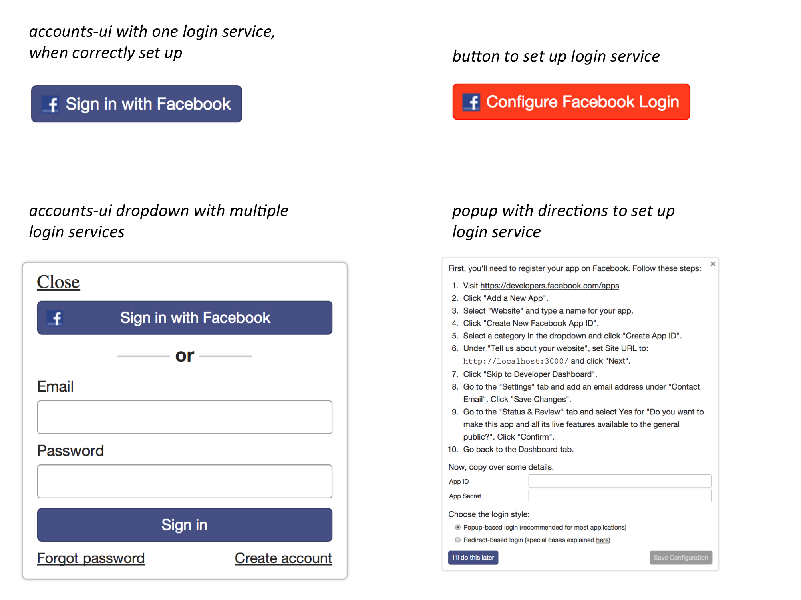

Users and Accounts
After reading this article, you’ll know:
- What features in core Meteor enable user accounts
- How to use accounts-ui for a quick prototype
- How to use the useraccounts family of packages to build your login UI
- How to build a fully-featured password login experience
- How to enable login through OAuth providers like Facebook
- How to add custom data to Meteor’s users collection
- How to manage user roles and permissions
Features in core Meteor
Before we get into all of the different user-facing accounts functionality you can add with Meteor, let’s go over some of the features built into the Meteor DDP protocol and accounts-base package. These are the parts of Meteor that you’ll definitely need to be aware of if you have any user accounts in your app; most of everything else is optional and added/removed via packages.
userId in DDP
DDP is Meteor’s built-in pub/sub and RPC protocol. You can read about how to use it in the Data Loading and Methods articles. In addition to the concepts of data loading and method calls, DDP has one more feature built in - the idea of a userId field on a connection. This is the place where login state is tracked, regardless of which accounts UI package or login service you are using.
This built-in feature means that you always get this.userId inside Methods and Publications, and can access the user ID on the client. This is a great starting point for building your own custom accounts system, but most developers won’t need to worry about the mechanics, since you’ll mostly be interacting with the accounts-base package instead.
accounts-base
This package is the core of Meteor’s developer-facing user accounts functionality. This includes:
- A users collection with a standard schema, accessed through
Meteor.users, and the client-side singletonsMeteor.userId()andMeteor.user(), which represent the login state on the client. - A variety of helpful other generic methods to keep track of login state, log out, validate users, etc. Visit the Accounts section of the docs to find a complete list.
- An API for registering new login handlers, which is used by all of the other accounts packages to integrate with the accounts system. There isn’t any official documentation for this API, but you can read more about it on the MeteorHacks blog.
Usually, you don’t need to include accounts-base yourself since it’s added for you if you use accounts-password or similar, but it’s good to be aware of what is what.
Fast prototyping with accounts-ui
Often, a complicated accounts system is not the first thing you want to build when you’re starting out with a new app, so it’s useful to have something you can just drop in quickly. This is where accounts-ui comes in - it’s just one line that you drop into your app to get an accounts system. To add it:
1 | meteor add accounts-ui |
Then just include it anywhere in a Blaze template:
1 | {{> loginButtons}} |
Then, make sure to pick a login provider; they will automatically integrate with accounts-ui:
1 | # pick one or more of the below |
Now just open your app, follow the configuration steps, and you’re good to go - if you’ve done the Meteor tutorial, you’ve already seen this in action. Of course, in a production application, you probably want a more custom user interface and some logic to have a more tailored UX, but that’s why we have the rest of this guide.
Here are a couple of screenshots of accounts-ui so you know what to expect:

Customizable UI: useraccounts
Once you’ve gotten your initial prototype up and running with accounts-ui, you’ll want to move to something more powerful and configurable so that you can better integrate your login flow with the rest of your app. The useraccounts family of packages is the most powerful set of accounts management UI controls available for Meteor today. If you need even more customization, you can also roll your own system, but it’s worth trying useraccounts first.
Use any router or UI framework
The first thing to understand about useraccounts is that the core accounts management logic is independent of the HTML templates and routing packages. This means you can use useraccounts:core to build your own set of login templates. Generally, you’ll want to pick one login template package and one login routing package. The options for templates include:
useraccounts:unstyledwhich lets you bring your own CSS; this one is used in the Todos example app to make the login UI blend seamlessly with the rest of the app.- Pre-built templates for Bootstrap, Semantic UI, Materialize, and more. These templates don’t come with the actual CSS framework, so you can pick your favorite Bootstrap package, for example.
While it’s optional and the basic functionality will work without it, it’s also a good idea to pick a router integration:
- Flow Router, the router recommended in this guide.
- Iron Router, another popular router in the Meteor community.
In the example app we are using the Flow Router integration with great success. Some of the later sections will cover how to customize the routes and templates to fit your app better.
Drop-in UI without routing
If you don’t want to configure routing for your login flow, you can just drop in a self-managing accounts screen. Wherever you want the accounts UI template to render, just include the atForm template, like so:
1 | {{> atForm}} |
Once you configure routing according to the section below, you’ll want to remove this inclusion.
Customizing templates
For some apps, the off-the-shelf login templates provided by the various useraccounts UI packages will work as-is, but most apps will want to customize some of the presentation. There’s a simple way to do that using the template replacement functionality of the aldeed:template-extension package.
First, figure out which template you want to replace by looking at the source code of the package. For example, in the useraccounts:unstyled package, the templates are listed in this directory on GitHub. By squinting at the file names and looking for some of the HTML strings, we can figure out that we might be interested in replacing the atPwdFormBtn template. Let’s take a look at the original template:
1 | <template name="atPwdFormBtn"> |
Once you’ve identified which template you need to replace, define a new template. In this case, we want to modify the class on the button to work with the CSS for the rest of the app. There are a few things to keep in mind when overriding a template:
- Render the helpers in the same way the previous template did. In this case we are using
buttonText. - Keep any
idattributes, likeat-btn, since those are used for event handling.
Here’s what our new override template looks like:
1 | <template name="override-atPwdFormBtn"> |
Then, use the replaces function on the template to override the existing template from useraccounts:
1 | Template['override-atPwdFormBtn'].replaces('atPwdFormBtn'); |
Customizing routes
In addition to having control over the templates, you’ll want to be able to control the routing and URLs for the different views offered by useraccounts. Since Flow Router is the officially recommended routing option for Meteor, we’ll go over that in particular.
First, we need to configure the layout we want to use when rendering the accounts templates:
1 | AccountsTemplates.configure({ |
In this case, we want to use the App_body layout template for all of the accounts-related pages. This template has a content region called main. Now, let’s configure some routes:
1 | // Define these routes in a file loaded on both client and server |
Now, we can easily render links to our login page like so:
1 | <div class="btns-group"> |
Note that we have specified a password reset route. Normally, we would have to configure Meteor’s accounts system to send this route in password reset emails, but the useraccounts:flow-routing package does it for us. Read more about configuring email flows below.
You can find a complete list of different available routes in the documentation the useraccounts:flow-routing.
Further customization
useraccounts offers many other customization options beyond templates and routing. Read the useraccounts guide to learn about all of the other options.
Password login
Meteor comes with a secure and fully-featured password login system out of the box. To use it, add the package:
1 | meteor add accounts-password |
To see what options are available to you, read the complete description of the accounts-password API in the Meteor docs.
Requiring username or email
Note: You don’t have to do this if you’re using
useraccounts. It disables the regular Meteor client-side account creation functions for you and does custom validation.
By default, the Accounts.createUser function provided by accounts-password allows you to create an account with a username, email, or both. Most apps expect a specific combination of the two, so you will certainly want to validate the new user creation:
1 | // Ensuring every user has an email address, should be in server-side code |
Multiple emails
Often, users might want to associate multiple email addresses with the same account. accounts-password addresses this case by storing the email addresses as an array in the user collection. There are some handy API methods to deal with adding, removing, and verifying emails.
One useful thing to add for your app can be the concept of a “primary” email address. This way, if the user has added multiple emails, you know where to send confirmation emails and similar.
Case sensitivity
Before Meteor 1.2, all email addresses and usernames in the database were considered to be case-sensitive. This meant that if you registered an account as AdaLovelace@example.com, and then tried to log in with adalovelace@example.com, you’d see an error indicating that no user with that email exists. Of course, this can be quite confusing, so we decided to improve things in Meteor 1.2. But the situation was not as simple as it seemed; since MongoDB doesn’t have a concept of case-insensitive indexes, it was impossible to guarantee unique emails at the database level. For this reason, we have some special APIs for querying and updating users which manage the case-sensitivity problem at the application level.
What does this mean for my app?
Just follow one simple rule: don’t query the database by username or email directly. Instead, use the Accounts.findUserByUsername and Accounts.findUserByEmail methods provided by Meteor. This will run a query for you that is case-insensitive, so you will always find the user you are looking for.
Email flows
When you have a login system for your app based on user emails, that opens up the possibility for email-based account flows. The common thing between all of these workflows is that they involve sending a unique link to the user’s email address, which does something special when it is clicked. Let’s look at some common examples that Meteor’s accounts-password package supports out of the box:
- Password reset. When the user clicks the link in their email, they are taken to a page where they can enter a new password for their account.
- User enrollment. A new user is created by an administrator, but no password is set. When the user clicks the link in their email, they are taken to a page where they can set a new password for their account. Very similar to password reset.
- Email verification. When the user clicks the link in their email, the application records that this email does indeed belong to the correct user.
Here, we’ll talk about how to manage the whole process manually from start to finish.
Email works out of the box with accounts UI packages
If you want something that just works out of the box, you can use accounts-ui or useraccounts which basically do everything for you. Only follow the directions below if you definitely want to build all parts of the email flow yourself.
Sending the email
accounts-password comes with handy functions that you can call from the server to send an email. They are named for exactly what they do:
The email is generated using the email templates from Accounts.emailTemplates, and include links generated with Accounts.urls. We’ll go into more detail about customizing the email content and URL later.
Identifying when the link is clicked
When the user receives the email and clicks the link inside, their web browser will take them to your app. Now, you need to be able to identify these special links and act appropriately. If you haven’t customized the link URL, then you can use some built-in callbacks to identify when the app is in the middle of an email flow.
Normally, when the Meteor client connects to the server, the first thing it does is pass the login resume token to re-establish a previous login. However, when these callbacks from the email flow are triggered, the resume token is not sent until your code signals that it has finished handling the request by calling the done function that is passed into the registered callback. This means that if you were previously logged in as user A, and then you clicked the reset password link for user B, but then you cancelled the password reset flow by calling done(), the client would log in as A again.
Here’s how you would use one of these functions:
1 | Accounts.onResetPasswordLink((token, done) => { |
If you want a different URL for your reset password page, you need to customize it using the Accounts.urls option:
1 | Accounts.urls.resetPassword = (token) => { |
If you have customized the URL, you will need to add a new route to your router that handles the URL you have specified, and the default Accounts.onResetPasswordLink and friends won’t work for you.
Displaying an appropriate UI and completing the process
Now that you know that the user is attempting to reset their password, set an initial password, or verify their email, you should display an appropriate UI to allow them to do so. For example, you might want to show a page with a form for the user to enter their new password.
When the user submits the form, you need to call the appropriate function to commit their change to the database. Each of these functions takes the new value and the token you got from the event in the previous step.
Accounts.resetPassword- this one should be used both for resetting the password, and enrolling a new user; it accepts both kinds of tokens.Accounts.verifyEmail
After you have called one of the two functions above or the user has cancelled the process, call the done function you got in the link callback. This will tell Meteor to get out of the special state it enters when you’re doing one of the email account flows.
Customizing accounts emails
You will probably want to customize the emails accounts-password will send on your behalf. This can be easily done through the Accounts.emailTemplates API. Below is some example code from the Todos app:
1 | Accounts.emailTemplates.siteName = "Meteor Guide Todos Example"; |
As you can see, we can use the ES2015 template string functionality to generate a multi-line string that includes the password reset URL. We can also set a custom from address and email subject.
HTML emails
If you’ve ever needed to deal with sending pretty HTML emails from an app, you know that it can quickly become a nightmare. Compatibility of popular email clients with basic HTML features like CSS is notoriously spotty, so it is hard to author something that works at all. Start with a responsive email template or framework, and then use a tool to convert your email content into something that is compatible with all email clients. This blog post by Mailgun covers some of the main issues with HTML email. In theory, a community package could extend Meteor’s build system to do the email compilation for you, but at the time of writing we were not aware of any such packages.
OAuth login
In the distant past, it could have been a huge headache to get Facebook or Google login to work with your app. Thankfully, most popular login providers have standardized around some version of OAuth, and Meteor supports some of the most popular login services out of the box.
Facebook, Google, and more
Here’s a complete list of login providers for which Meteor actively maintains core packages:
- Facebook with
accounts-facebook - Google with
accounts-google - GitHub with
accounts-github - Twitter with
accounts-twitter - Meetup with
accounts-meetup - Meteor Developer Accounts with
accounts-meteor-developer
There is a package for logging in with Weibo, but it is no longer being actively maintained.
Logging in
If you are using an off-the-shelf login UI like accounts-ui or useraccounts, you don’t need to write any code after adding the relevant package from the list above. If you are building a login experience from scratch, you can log in programmatically using the Meteor.loginWith<Service> function. It looks like this:
1 | Meteor.loginWithFacebook({ |
Configuring OAuth
There are a few points to know about configuring OAuth login:
- Client ID and secret. It’s best to keep your OAuth secret keys outside of your source code, and pass them in through Meteor.settings. Read how in the Security article.
- Redirect URL. On the OAuth provider’s side, you’ll need to specify a redirect URL. The URL will look like:
https://www.example.com/_oauth/facebook. Replacefacebookwith the name of the service you are using. Note that you will need to configure two URLs - one for your production app, and one for your development environment, where the URL might be something likehttp://localhost:3000/_oauth/facebook. - Permissions. Each login service provider should have documentation about which permissions are available. For example, here is the page for Facebook. If you want additional permissions to the user’s data when they log in, pass some of these strings in the
requestPermissionsoption toMeteor.loginWithFacebookorAccounts.ui.config. In the next section we’ll talk about how to retrieve that data.
Calling service API for more data
If your app supports or even requires login with an external service such as Facebook, it’s natural to also want to use that service’s API to request additional data about that user. For example, you might want to get a list of a Facebook user’s photos.
First, you’ll need to request the relevant permissions when logging in the user. See the section above for how to pass those options.
Then, you need to get the user’s access token. You can find this token in the Meteor.users collection under the services field. For example, if you wanted to get a particular user’s Facebook access token:
1 | // Given a userId, get the user's Facebook access token |
For more details about the data stored in the user database, read the section below about accessing user data.
Now that you have the access token, you need to actually make a request to the appropriate API. Here you have two options:
- Use the
httppackage to access the service’s API directly. You’ll probably need to pass the access token from above in a header. For details you’ll need to search the API documentation for the service. - Use a package from Atmosphere or npm that wraps the API into a nice JavaScript interface. For example, if you’re trying to load data from Facebook you could use the fbgraph npm package. Read more about how to use npm with your app in the Build System article.
Loading and displaying user data
Meteor’s accounts system, as implemented in accounts-base, also includes a database collection and generic functions for getting data about users.
Currently logged in user
Once a user is logged into your app with one of the methods described above, it is useful to be able to identify which user is logged in, and get the data provided during the registration process.
On the client: Meteor.userId()
For code that runs on the client, the global Meteor.userId() reactive function will give you the ID of the currently logged in user.
In addition to that core API, there are some helpful shorthand helpers: Meteor.user(), which is exactly equal to calling Meteor.users.findOne(Meteor.userId()), and the {{currentUser}} Blaze helper that returns the value of Meteor.user().
Note that there is a benefit to restricting the places you access the current user to make your UI more testable and modular. Read more about this in the UI article.
On the server: this.userId
On the server, each connection has a different logged in user, so there is no global logged-in user state by definition. Since Meteor tracks the environment for each Method call, you can still use the Meteor.userId() global, which returns a different value depending on which Method you call it from, but you can run into edge cases when dealing with asynchronous code. Also, Meteor.userId() won’t work inside publications.
We suggest using the this.userId property on the context of Methods and publications instead, and passing that around through function arguments to wherever you need it.
1 | // Accessing this.userId inside a publication |
1 | // Accessing this.userId inside a Method |
The Meteor.users collection
Meteor comes with a default MongoDB collection for user data. It’s stored in the database under the name users, and is accessible in your code through Meteor.users. The schema of a user document in this collection will depend on which login service was used to create the account. Here’s an example of a user that created their account with accounts-password:
1 | { |
Here’s what the same user would look like if they instead logged in with Facebook:
1 | { |
Note that the schema is different when users register with different login services. There are a few things to be aware of when dealing with this collection:
- User documents in the database have secret data like access keys and hashed passwords. When publishing user data to the client, be extra careful not to include anything that client shouldn’t be able to see.
- DDP, Meteor’s data publication protocol, only knows how to resolve conflicts in top-level fields. This means that you can’t have one publication send
services.facebook.first_nameand another sendservices.facebook.locale- one of them will win, and only one of the fields will actually be available on the client. The best way to fix this is to denormalize the data you want onto custom top-level fields, as described in the section about custom user data. - The OAuth login service packages populate
profile.name. We don’t recommend using this but, if you plan to, make sure to deny client-side writes toprofile. See the section about theprofilefield on users. - When finding users by email or username, make sure to use the case-insensitive functions provided by
accounts-password. See the section about case-sensitivity for more details.
Custom data about users
As your app gets more complex, you will invariably need to store some data about individual users, and the most natural place to put that data is in additional fields on the Meteor.users collection described above. In a more normalized data situation it would be a good idea to keep Meteor’s user data and yours in two separate tables, but since MongoDB doesn’t deal well with data associations it makes sense to just use one collection.
Add top-level fields onto the user document
The best way to store your custom data onto the Meteor.users collection is to add a new uniquely-named top-level field on the user document. For example, if you wanted to add a mailing address to a user, you could do it like this:
1 | // Using address schema from schema.org |
Adding fields on user registration
The code above is just code that you could run on the server inside a Meteor Method to set someone’s mailing address. Sometimes, you want to set a field when the user first creates their account, for example to initialize a default value or compute something from their social data. You can do this using Accounts.onCreateUser:
1 | // Generate user initials after Facebook login |
Note that the user object provided doesn’t have an _id field yet. If you need to do something with the new user’s ID inside this function, a useful trick can be to generate the ID yourself:
1 | // Generate a todo list for each new user |
Don’t use profile
There’s a tempting existing field called profile that is added by default when a new user registers. This field was historically intended to be used as a scratch pad for user-specific data - maybe their image avatar, name, intro text, etc. Because of this, the profile field on every user is automatically writeable by that user from the client. It’s also automatically published to the client for that particular user.
It turns out that having a field writeable by default without making that super obvious might not be the best idea. There are many stories of new Meteor developers storing fields such as isAdmin on profile… and then a malicious user can easily set that to true whenever they want, making themselves an admin. Even if you aren’t concerned about this, it isn’t a good idea to let malicious users store arbitrary amounts of data in your database.
Rather than dealing with the specifics of this field, it can be helpful to just ignore its existence entirely. You can safely do that as long as you deny all writes from the client:
1 | // Deny all client-side updates to user documents |
Even ignoring the security implications of profile, it isn’t a good idea to put all of your app’s custom data onto one field. As discussed in the Collections article, Meteor’s data transfer protocol doesn’t do deeply nested diffing of fields, so it’s a good idea to flatten out your objects into many top-level fields on the document.
Publishing custom data
If you want to access the custom data you’ve added to the Meteor.users collection in your UI, you’ll need to publish it to the client. Mostly, you can just follow the advice in the Data Loading and Security articles.
The most important thing to keep in mind is that user documents are certain to contain private data about your users. In particular, the user document includes hashed password data and access keys for external APIs. This means it’s critically important to filter the fields of the user document that you send to any client.
Note that in Meteor’s publication and subscription system, it’s totally fine to publish the same document multiple times with different fields - they will get merged internally and the client will see a consistent document with all of the fields together. So if you just added one custom field, you should just write a publication with that one field. Let’s look at an example of how we might publish the initials field from above:
1 | Meteor.publish('Meteor.users.initials', function ({ userIds }) { |
This publication will let the client pass an array of user IDs it’s interested in, and get the initials for all of those users.
Roles and permissions
One of the main reasons you might want to add a login system to your app is to have permissions for your data. For example, if you were running a forum, you would want administrators or moderators to be able to delete any post, but normal users can only delete their own. This uncovers two different types of permissions:
- Role-based permissions
- Per-document permissions
alanning:roles
The most popular package for role-based permissions in Meteor is alanning:roles. For example, here is how you would make a user into an administrator, or a moderator:
1 | // Give Alice the 'admin' role |
Now, let’s say you wanted to check if someone was allowed to delete a particular forum post:
1 | const forumPost = Posts.findOne(postId); |
Note that we can check for multiple roles at once, and if someone has a role in the GLOBAL_GROUP, they are considered as having that role in every group. In this case, the groups were by category ID, but you could use any unique identifier to make a group.
Read more in the alanning:roles package documentation.
Per-document permissions
Sometimes, it doesn’t make sense to abstract permissions into “groups” - you just want documents to have owners and that’s it. In this case, you can use a simpler strategy using collection helpers.
1 | Lists.helpers({ |
Now, we can call this simple function to determine if a particular user is allowed to edit this list:
1 | const list = Lists.findOne(listId); |
Learn more about how to use collection helpers in the Collections article.